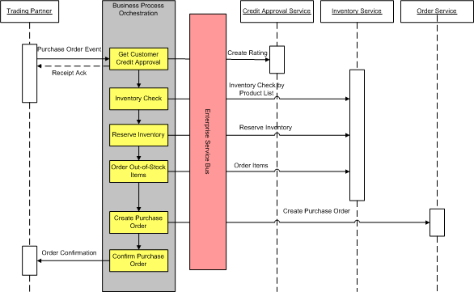

OUM |
Service-Oriented Architecture (SOA) Project Delivery Supplemental Guide |
||
Method Navigation |
Current Page Navigation |
||
|
|
||||||||
This document contains OUM supplemental task guidance for SOA project delivery.
The task guidelines in this document should be used to supplement the guidelines that appear in the OUM Task Overview.
As part of the Portfolio Management Strategy for SOA, you should define the version management strategy for the relevant assets, and thereafter synchronize change management with this strategy. Review the section “Service Versioning Strategy” in the Service Lifecycle technique for more information. In initial SOA implementations there may not be an Enterprise strategy around Portfolio Management. In that situation you will need to define enough structure to support the implementation, and encourage the enterprise to develop the Portfolio Management Strategy in conjunction with the initial implementation of SOA within the Enterprise.
A software release refers to the creation and availability of a new version of computer software product or a group of configuration items.
Release planning is the activity of determining a feasible combination of dates, features, components and resourcing for the next release of an existing software product.
There are many prerequisites for this task according to the methodology. Unfortunately, the customer may not have all of the desired prerequisites and in some instances, they may not necessary if this is going to be a pure integration delivery. However, for both the Pragmatic and Tactical SOA approaches, the Configuration Management Plan and Processes (CM.010) is a required prerequisite.
When a new Enterprise Requirement has been identified, either as a request for reuse of an existing asset, or as an extension to an existing asset, or as a complete new asset, this needs to be prioritized. Each requirement will have an assigned ownership. For further details about this, review the Enterprise Requirements Management technique.
SOA requirements management is somewhat different from traditional requirements management. In a traditional approach, requirements could be managed in project scope, i.e. each project is defining and managing its own requirements to create a solution in the scope of the project. But in SOA the goal is to share services and as a consequence projects will need to start sharing the corresponding requirements as well. Therefore, it is important to manage the requirements related to services at enterprise level. Depending on the service engineering approach, this may also lead to the need to manage all requirements at the enterprise level, to make requirements visible across projects hence supporting the service identification and discovery approach. Scoping requirements at the enterprise level, rather than at the application or project level enables project architecture and planning exercises to remain connected to the overall enterprise SOA.
The Business Scope indicates the domain within which the Requirements Management Process should be defined and executed for SOA. This gives the boundaries for the work that should be performed using tasks from both Envision and Implement focus areas.
The Enterprise Function or Business Process Models should be created or updated whenever required based on new or updated models developed as part of a project. The project models should be classified following the taxonomy of the function or business process model (see the Functional or Process Modeling technique). It will then be easier to identify any possible duplicates or overlaps in the Enterprise Repository.
When the project-level models duplicate models in the Enterprise Repository, you should further examine the project requirements to see whether there is a 100% fit with the Enterprise requirements, or whether the fit is only partial. If there is a 100% fit, this should be marked for potential reuse. If the fit is only partial, you should consider whether it would be feasible to extend the current function with the new requirements. If there is no fit, the new requirements should be registered in the Enterprise Repository for possible later reuse.
For further details about this, review the Enterprise Requirements Management technique.
During Service Identification and Discovery, the Enterprise Function or Business Process Model may be used as a basis for Functional Activity Analysis. Review the Service Identification and Discovery technique for more information about this.
The Enterprise Domain Model should be created or updated whenever that is required based on new models developed in a project. The project models should be classified following the taxonomy of the domain model. It will then be easier to identify any possible duplicates or overlaps in the Enterprise Repository.
When there are duplicates in the models, you should look further into the documented requirements to verify whether there is a 100% fit, or whether the fit is only partial. If there is a 100% fit, this should be marked as a potential reuse. If it is only partial, consider whether it would be feasible to extend the current function with the new requirements. If there is no fit, the new requirements should be registered in the Enterprise Repository for possible later reuse.
For further details about this, review the Enterprise Requirements Management technique.
During Service Identification and Discovery, the Enterprise Domain Model is used as a basis for Data Model Analysis. Review the Service Identification and Discovery technique for more information about this.
The High-Level Use Cases should be created or updated whenever that is required based on use cases being identified during a project. The use cases should be classified following the taxonomy of the Use Case Model. It will then be easier to identify any possible duplicates or overlaps in the Enterprise Repository.
When there are duplicates in the models, you should look further into the documented requirements to verify whether there is a 100% fit, or whether the fit is only partial. If there is a 100% fit, this should be marked as a potential reuse. If it is only partial, consider whether it would be feasible to extend the current function with the new requirements. If there is no fit, the new requirements should be registered in the Enterprise Repository for possible later reuse.
For further details about this, review the Enterprise Requirements Management technique.
During Service Identification and Discovery, the High-Level Uses Cases are used as a basis for Functional Activity Analysis. Review the Service Identification and Discovery technique for more information about this.
You should define all the architectural standards and polices you will need for service engineering. This includes:
When determining the Technology Reference Architecture for SOA – called the SOA Reference Architecture – there are certain elements that should be covered. For any situation that involves a set of SOA services of any significant size, or if the enterprise has embraced SOA as an IT strategy, it is important to determine and document a consistent strategy for service implementation. Failure to establish such a strategy might result in an inconsistent service implementation and may negate the advantages of using a SOA approach by greatly hampering reuse.
Therefore, during this task, you define the SOA Reference Architecture that will be used at the enterprise level, one of the most important parts being the definition of the layers of the SOA architecture. The SOA Reference Architecture should describe:
The SOA Reference Architecture should cover:
Guidelines for points 1 and 2 above are available in the Service Architecture technique.
Most people have a different understanding of what is a service, depending of their background, level of experience with SOA, etc. The first part of the SOA Reference Architecture is concerned with defining what is a service, what is it's composition, etc. See the Service Architecture technique for more guidance.
SOA layers provide a means to organize application user interfaces and services in similar groupings. There is not necessarily a direct relationship between SOA service layers and the physical infrastructure tiers. SOA service layering is chiefly concerned with establishing the architectural decoupling such that processes and data can be more readily distributed and deployed. It allows for defining different types of services and then the different policies or rules that apply to them. For example, you may define that a data service must use objects from the enterprise canonical data model, whereas a presentation service does not.
See the Service Architecture technique for more details on how to do this.
One aspect in particular that needs to be considered while defining possible SOA service layers is their granularity. The following three aspects are the most important ones that can help you in determining the right granularity:
Business Suitability
Ideally a service supports an atomic operation of a business task. It provides just enough functionality needed for that task. Whenever making it simpler makes it more general, this will increase the level of reusability of the service.
One service that handles a customer with addresses as well as all the orders the customer can place is likely too big. You probably cannot reuse it for some other business task that only involves handling a customer and no order lines (for example, for security reasons).
Performance and Size
Services are called remotely and therefore require a roundtrip, and so a performance overhead is incurred. You therefore want to reduce the calls to a service as much as possible, as long as that does result in services having too many responsibilities (see previous point). For example, rather than identifying a service that handles one order as well as another service that handles one order line, you identify one service that handles an order together with its order lines.
Furthermore, services are limited in the size of the messages they can process efficiently. When a message becomes too big, it will require too many resources to process. Transactions and State operations should be self-contained as much as , to reduce the risk that the state gets lost when a service fails to complete. When a service stores data this should be done in exactly one transaction, and failure of a service should not result in corrupting the data. In other words: between two calls the data will always be in a valid state.
Integration Considerations
During this analysis, try and look at the number of partner links to maximize the business logic to have services that are self-contained. Try designing components that do not have a fine granularity.
There are several ways to approach the integration analysis for defining the integrations and the canonicals. One approach is to think of a hub and spoke model where there is a single canonical that can be used for the services. Another approach is to have a unique canonical for each service. A finally approach may be to utilize an ESB (Enterprise Service Bus) architecture.
The details of the infrastructure required to run the SOA is also an important part of the SOA Reference Architecture. This may include a choice of Enterprise Service Bus, Enterprise Repository, BPM tooling, etc. In this section, describe the functions that the components you need carry out and how these components interact with each other. It is recommended to leave this section technology and product agnostic and detail the products in the Implementation section below.
The SOA Security Strategy should include the solutions for the following:
This section should also include a description of how the provisioning process should be monitored, to support governance on the security by the architecture. This aspect should also cover how alerts/reports should be created depending on how services are used (such as halts, interruptions, decline and so on). This should be documented both from a service provider and a service consumer point of view.
The "Implementation View” of the SOA Reference Architecture describes the technology and products required to implement the SOA Reference Architecture defined so far.
Services may be packaged individually or as a group, independently of each other or as part of a common release cycle. In this step, define which strategy the enterprise adopts including the criteria for grouping services, release cycles, etc.
See the SOA Release Planning technique for more details on how to perform this step.
General SOA service design principles:
Use of Design Patterns should be followed whenever possible. Some of the typical integration design patterns include:
Naming standards should be defined for all project components. The naming standards should be tailored to the products used within the solution (i.e., BPEL PM, B2B). At a minimum, the focus of naming standards should cover:
At a minimum, coding standards should address:
Contract/Interface First - Define the interface first. Interfaces determine the contract between service consumers and providers.
Connectivity and messaging mechanisms:
Process Orchestration, Workflows and Rules:
| Task ID | Task Name | Work Product Name | Phase |
|---|---|---|---|
Envision |
|||
BA.080 |
Identify Candidate Enterprise Business Rules | Candidate Business Rules | Initiate |
IP.030 |
Analyze Business Rules | Business Rules Analysis | Initiate |
EA.160 |
Define Business Rules Implementation Strategy | Business Rules Implementation Strategy | Initiate |
BA.110 |
Maintain Business Rules | Maintained Business Rules | Maintain and Evolve |
IP.080 |
Maintain Repository of Artifacts (for Business Rules) | Maintained Repository of Artifacts (for Business Rules) | Maintain and Evolve |
Implement |
|||
RA.027.1 |
Identify Candidate Business Rules | Candidate Business Rules | Inception |
RA.028.1 |
Populate Business Rules Repository | Populated Business Rules Repository | Inception |
RA.027.2 |
Identify Candidate Business Rules | Candidate Business Rules | Elaboration |
RA.028.2 |
Populate Business Rules Repository | Populated Business Rules Repository | Elaboration |
AN.070.1 |
Analyze Business Rules | Business Rules Analysis | Elaboration |
DS.060 |
Define Business Rules Implementation Strategy | Business Rules Implementation Strategy | Elaboration |
DS.110.1 |
Design Business Rules | Business Rules Design | Elaboration |
IM.055.1 |
Perform Business Rules Implementation (Rules Engine) | Implemented Business Rules (Rules Engine) | Elaboration |
RA.027.3 |
Identify Candidate Business Rules | Candidate Business Rules | Construction |
RA.028.3 |
Populate Business Rules Repository | Populated Business Rules Repository | Construction |
AN.070.2 |
Analyze Business Rules | Business Rules Analysis | Construction |
DS.110.2 |
Design Business Rules | Business Rules Design | Construction |
IM.055.2 |
Perform Business Rules Implementation (Rules Engine) | Implemented Business Rules (Rules Engine) | Construction |
The SOA Reference Architecture template can be used to document this task.
Service Engineering will, in addition to the service asset itself, require other assets along the service lifecycle, such as models. If there are no existing meta models for those other assets, or if the meta models do not support SOA, then you will need to create or update these meta models as part of this task. You need to do this unless there is another initiative to define meta models for these artifacts. Either way, you need to be certain that the meta models support what is needed by SOA.
When a meta-model update is required, you will identify or define the taxonomy that should be used for all artifacts that are related to a SOA, with exception of the taxonomies for Projects, Applications and Services, as these are defined in their respective tasks, Determine Projects Meta Data Description (GV.092), Determine Applications Meta Data Description (GV.094) and Determine Services Meta Data Description (GV.096). You thereby perform the step “Determine Asset Type Taxonomies”. Review the IT Asset Management technique to perform this task.
There may already be an Enterprise Repository available, or the organization has only decided which Enterprise Repository should be used, but it is not yet available, or ther eis no Enterprise Repository. The Enterprise Repository is needed to store and maintain all the required types of artifacts. For SOA, the Enterprise Repository should store all the service definitions, as well as the artifacts that are needed along the lifecycle of the service. The actual implementation of the assets in the Enterprise Repository is performed as part of the task, Implement Governance (GV.100).
For the type of assets you need for SOA, in addition to determining the taxonomies, you should perform these steps these materials are not already available :
All of this work is all required to define a proper Portfolio Management Strategy for SOA. Review the IT Asset Management technique for more information on this.
When the Future Process Model has been developed during a project, the model should be verified against the Enterprise Repository for reuse. You should verify this as early as possible, after having defined only the highest levels of the process model, to see whether you can identify any duplicates or partial duplicates that you may reuse in your modeling efforts. This verification should be done multiple times during the process, as you might discover new aspects along the way, which may result in new mappings. You should classify your future process model following the process model taxonomy. That makes it easier to identify any duplicates.
Review the Enterprise Requirements Management technique for further information about this.
During Service Identification and Discovery, the Future Process Model may be used as a basis for Functional Activity Analysis. Review the Service Identification and Discovery technique for more information about this.
In this task, you define the future business model in the form of integrated process flows based on the business processes supported by the new applications.
There are many prerequisites for this task according to the methodology. Unfortunately, the customer may not have all of the desired prerequisites and in some instances, they may not necessary if this is going to be a pure integration delivery. For SOA implementations, consider the following for this task:
| Prerequisite | Pragmatic | Tactical | Usage |
|---|---|---|---|
Service Portfolio - Candidate Services (ENV.BA.090) |
Tentative | Optional | For the Pragmatic SOA Approach, obtain the enterprise-level documents if they are available. |
Process Improvement Options (ENV.BA.090) |
Optional | Optional | |
Business and System Objectives (RD.001) |
Required | Required | The Business and System Objectives are used to determine what should be the content of the new application. |
System Context Diagram (RD.005) |
Required | Required | The System Context Diagram provides the boarders for the Future Process Model. |
Current Process Model (RD.030) |
Required | Required | Use material from the Current Process Model to gain an understanding of the processes and systems that support the current business. It may identify processes that offer opportunities for process improvement in cycle time, cost, and quality. It may also show major processes that are candidates for process redesign. |
Current Business Baseline Metrics (RD.034) |
Optional | Optional | For projects where the focus is on business performance improvement, the Current Business Baseline Metrics is used to identify the critical performance areas that need to be focused on while developing the Future Process Model. Without this baseline, any business performance improvement (or degradation) becomes very subjective. |
Business Use Case Model (RA.015) |
Required | Required | If the Business Use Case Model is not available, you may need to create it as part of this effort. |
Skilled Project Team (TR.050) |
Required | Required | The project team members must understand application concepts and capabilities in order to develop process models based on leading practices. This prerequisite helps them understand what process steps are supplied by application-specific functions. |
Business Process Reengineering (BPR) Studies |
Optional | Optional | Business Process Reengineering Studies are only appropriate if process change is relevant, and earlier business process change tasks were not carried out — most significantly, Detail System and Business Objectives (RD.001) and Obtain High-Level Business Descriptions (RD.020). Process reengineering studies may recommend the complete overhaul of current processes to be supported by the new applications. The output of a BPR study may, in fact, provide most of the content of the Future Process Model. |
Future Business Strategy |
Required | Required | This is probably part of the requirements; however, if not, It would make sense to understand so that the services could account for future direction. |
In a purely tactical approach, it would be best to tackle the delivery of the Future Process Model from the bottom-up. This involves decomposing the application and identifying sources of functionality to service-enable.
After reviewing the functional requirements, take the following approach when attempting to create a business process model:
For the data requirement decomposition, consider the following guidelines:
In this task, you collect high-level information about how the users conduct their business for those areas under investigation.
For Tactical SOA and Pragmatic SOA, though this is a required task, the following guidelines apply as engaging in a tactical manner may mean that the requirements have already been identified and the workshops have already been completed.
If an enterprise repository exists, then follow the steps outlined in the OUM.
For those situations where no enterprise repository exists, create a “repository.” The repository could be as simple as a spreadsheet. Consider the following Information for each requirement:
For SOA implementations, consider the following for this task:
| Prerequisite | Pragmatic | Tactical | Usage |
|---|---|---|---|
Configured Enterprise Repository (GV.098) |
Optional | Optional | If available, use the Configured Enterprise Repository to check for existing process models and add to or update the process models in the repository. |
Business and System Objectives (RD.001) |
Tentative | Optional | For the Pragmatic SOA Approach, obtain the enterprise-level objectives if available. |
Future Process Model (RD.011) |
Required | Required |
During the project that is executed in combination with this view, high-level business requirements are collected and used as input to the modeling tasks. When the requirements are gathered, you should check for duplicates in the Enterprise Repository. You need to update the Enterprise Repository with the new requirements. Review the Enterprise Requirements Management technique for more details about this.
When the requirements for the project have been identified, you should also know what kind of requirements may be implemented:
This is important information when prioritizing. A requirement that can be implemented through reuse may get a higher priority than it otherwise would have as it may be considered to be "low hanging fruit." For further details, review the Enterprise Requirements Management technique.
During this task, you identify enterprise-level tasks and policies.
If the Envision task, GV.030, Discover or Define Policies (or its equivalent) has been previously done for SOA at an enterprise level, then these policies should be used here. If GV.030 or its equivalent has not been done, then depending on business needs, SOA Governance Policies should be identified and created for this specific project.
At the enterprise level, architects have to determine the enterprise governance policies for the SOA project. Examples of governance policies include service acquisition policies, service lifecycle policies, and architecture/design policies.
Service acquisition policies provide guidelines and regulations about how a service should be acquired:
Service lifecycle policies govern the following aspects of a service lifecycle:
Architecture design policies govern the following aspects:
Service Design Policies cover aspects of what is needed to design services including:
Reporting requirements must address the monitoring of the SOA solution as well as management level reporting needs. Typical reporting requirements fall into the following areas:
When the Domain Model has been developed during a project, the model should be verified against the Enterprise Repository for reuse. You should verify this as early as possible to see whether you can identify any duplicates or partial duplicates that you may reuse in your modeling efforts. Frequently, the same data types or entities are used in multiple projects. To prevent multiple definitions of the same entity, you should verify this as early as possible. You should perform this type of verification multiple times during the process, as you might discover new aspects along the way, which may result in new mappings. You should classify your domain model following the domain model taxonomy. That makes it easier to identify duplicates.
You should review the Enterprise Requirements Management technique for further information about this.
During Service Identification & Discovery, the Domain Model may be used as a basis for Data Model Analysis. You should review the Service Identification and Discovery technique for more information about this.
For SOA implementations, consider the following for this task:
| Prerequisite | Pragmatic | Tactical | Usage |
|---|---|---|---|
Enterprise Domain Model (ENV.BA.050) |
Partial | Optional | For the Pragmatic SOA Approach, obtain the enterprise-level documents if they are available. |
Business and System Objectives (RD.001) |
Required | Required | The Business and System Objectives are used to determine the content of the new application. |
High-Level Business Descriptions (RD.020) |
Required | Required | The High-Level Business Descriptions identify the required business objects and their relationships. |
Consider the following additional guidelines when developing the Domain Model:
During this task you define the SOA Project Reference Architecture.
During project start up, you should check and get an understanding of the existing SOA strategy and determine specific project implications. This includes checking the SOA Reference Architecture (EA.075) at the enterprise level and understanding the service portfolio management strategy. If a SOA Reference Architecture or a service portfolio management strategy are lacking in the enterprise, you should create them in the context of the project with the view to extend them to the enterprise whenever appropriate.
One aspect in particular that needs to be considered while defining possible SOA service layers is their granularity. The following three factors are the most important in helping to determine the right granularity:
Business Suitability
Ideally, a service supports an atomic operation of a business task. It provides just enough functionality needed for that task. Whenever making it simpler makes it more general, this will increase the level of reusability of the service.
One service that handles a customer with addresses as well as all the orders the customer can place is likely too big. You probably cannot reuse it for some other business task that only involves handling a customer and no order lines (for example, for security reasons).
Performance and Size
Services are called remotely and therefore require a roundtrip, and the resulting performance overhead. You therefore want to minimize the calls to a service as much as possible, as long as that does result in services having too many responsibilities (see previous point). For example, rather than identifying a service that handles one order as well as another service that handles one order line, you identify one service that handles an order together with its order lines.
Furthermore, services are limited in the size of the messages they can process efficiently. When a message becomes too big, it will require too many resources to process. Transactions and State operations should, to the extent possible, be self-contained to reduce the risk that state get lost when a service fails to complete. When a service stores data this should be done in exactly one transaction and failure of a service should not result in corrupting the data. In other words, between two calls the data will always be in a valid state.
Integration Considerations
During this analysis, try and look at the number of partner links to maximize the business logic to have services that are self-contained. Try designing components that do not have a fine granularity.
There are several ways to approach the integration analysis for defining the integrations and the canonicals. One approach is to think of a hub and spoke model where there is a single canonical that can be used for the services. Another approach is to have a unique canonical for each service. A final approach may be to utilize an ESB (Enterprise Service Bus) architecture.
When you have developed the Use Case Model during a project, the use cases should be verified against the Enterprise Repository for reuse. You should verify this as early as possible to see whether you can identify any duplicates or partly duplicates that you may reuse in your modeling efforts. It is often that the same or similar use cases are used in multiple projects. To prevent duplicates across the Enterprise, you should verify this as early as possible. You should perform this type of verification multiple times during the process, as you might discover new aspects along the way, which may result in new mappings. You should classify your use cases following the use case model taxonomy. That makes it easier to identify any duplicates.
Review the Enterprise Requirements Management technique for further information about this.
During Service Identification & Discovery, the Use Case Model may be used as a basis for Functional Activity Analysis. Review the Service Identification and Discovery technique for more information about this.
There are many prerequisites for this task and a simplified Use Case Model may be sufficient for Tactical and Pragmatic SOA Approaches. For SOA implementations, consider the following for this task:
| Prerequisite | Pragmatic | Tactical | Usage |
|---|---|---|---|
Business Use Case Model (RA.015) |
Required | Optional | The Business Use Case Model is refined into the consistent Use Case Model. |
System Context Diagram (RD.005) |
Required | Optional | Use the System Context Diagram as a basis to identify new actors and use cases or to detail those identified in the Business Use Case Model. |
Future Process Model (RD.011) |
Optional | Optional | The Business Use Case Model and Future Process Model serve as input together with the initial Use Case Model to determine refined versions of use cases and additional use cases. |
High-Level Business Descriptions (RD.020) |
Required | Optional | The High-Level Business Descriptions are used as a basis to identify new actors and use cases or to detail those identified in the Business Use Case Model. |
Current Process Model (RD.030) |
Required | Optional | The Current Process Model is used as a basis to identify new actors and use cases or to detail those identified in the Business Use Case Model. |
Current Business Baseline Metrics (RD.034) |
Optional | Optional | The Current Business Baseline Metrics is used as a basis to identify new actors and use cases or to detail those identified in the Business Use Case Model. |
As Use Cases will provide the base for the design, it is strongly recommended to detail a use case with Business Process Diagrams using the BPMN (Business Process Modeling Notation), as this will be the base for the design of the business process to implement. A Business Process Diagram is similar to a UML Activity Diagram. BPMN has a clearly defined mapping to BPEL4WS.
At this point, enough details of the use cases should be available to begin identifying the services required to satisfy the use case. You therefore might consider utilizing business interaction diagrams (see Business Interaction Diagram below), which documents the interaction between the orchestration layer and services.

Business Interaction Diagram
These diagrams are very similar to UML Sequence Diagrams. In the center of the business interaction diagram is the business process or orchestration lane. To the left of the orchestration lane is the client of the orchestration service. For each interaction/event between the client and orchestration layer, the diagram indicates the services invoked and the operation called.
This task is about identifying new service candidates and discovering reuse of existing services.
Consider the following guidelines order to identify the candidate services:
For SOA implementations, consider the following for this task:
| Prerequisite | Pragmatic | Tactical | Usage |
|---|---|---|---|
Future Process Model (RD.011) |
Optional | Optional | Use this work product to identify candidate services. |
Current Process Model (RD.030) |
Required | Optional | Use this work product to identify candidate services. |
Domain Model (RD.065) |
Partial | Optional | Use this work product to identify candidate services. |
Use Case Model (RA.023) |
Required | Optional | Use this work product to identify candidate services. |
As noted in the OUM task description for RA.025, you can identify candidate services from either domain models or business process models through the high-level use cases that emerge.
Another approach that is not explicitly mentioned in the OUM task description involves leveraging subject matter experts with deep domain knowledge to elicit candidate services. You can use the domain modeling or business process modeling exercise to elicit candidate services from such experts, or engage in ancillary techniques after the models are built such as CRC exercises originally used in OOAD. CRC exercises also work best when bounded by specific high level use cases, and thus fit well with the recommended service discovery flow in OUM.
Not mentioned in the task description for RA.026, is the strong link between the Design Time Service Repository and SOA Governance. The services repository can serve as an instrument of design time governance if it is also a metadata catalog. With appropriate tagging of business and technology assets such as design patterns and service descriptions, it is possible to use the repository with IDEs and run-time registries to implement governance policies. For clarity OUM separates the concepts of populating a design-time repository from registering services in a run-time registry. However, in practice the trend is to closely link the repository and registry.
Task Step 2 in RA.026 refers to defining a service template. Such a definition should include the following (these should be high-level definitions as each section will be defined in detail in the Design phase):
| Item | Description |
|---|---|
Service Name |
The name of the service |
Service Description |
An overview description of the service |
Service Type |
Synchronous/Asynchronous |
Functional Domain |
Human Resources, Accounting, Manufacturing, etc. |
Service Classification |
As an example, you could use Component Layer, Data Layer, Business Layer and Workflow Layer. There are other ways of classifying are possible. |
Service Process Rules |
Detailed service processing logic |
Message Formats |
The inbound and outbound message formats. If applicable, define the fault message format for synchronous services. |
Security Requirements |
Any security requirements in relation to client authentication and authorization and data encryption |
Applications |
Identify the data sources (for example, application, database) this service must interact with to complete its functionality. Details of the application interface used for communication. |
Service Dependency |
Any other services this service depends on for functionality. |
Human Workflow |
If applicable, details of human workflow capabilities this service must provide. |
Data Persistence |
Setting up the dehydration tables |
Performance Goals and Measures |
Setting up the dehydration tables |
Exception Handling |
Describe any exceptions and exception handling logic. Define criteria for when faults are generated by the service. |
In SOA implementation, a typical scenario will be BPEL with Workflow implementation. In this case, the human workflow work list application's user interface typically addresses human workflow within business process and reporting requirements. Complexities of the workflow interface need to be defined which will include custom screen development using BPEL workflow API. BPEL designers and developers should work with the ambassador users to verify and validate the functionality listed in the requirement for the functional prototype.
The Design process of a SOA implementation is focused on the development of services and the orchestration of those services. Ingrained in the SOA approach is the design and development of loosely coupled services that can be orchestrated and re-orchestrated, as business needs change. Since BPEL is standardized on WSDL, such adaptability is inherent within the SOA approach.
The purpose of this task is to update the system’s architecture to add design-related details that establish a set of components to be designed, to determine the structure of those components within the system at runtime, and to determine guidelines for proceeding with detailing the design of the identified components.
One step is to identify Design Guidelines that should be applied during Service Design. If there is a SOA Reference Architecture (EA.075) in place, then it should contain design principles to which each project should adhere. Use this as a starting point for your Design Guidelines. If a SOA Reference Architecture is not available, and there is limited availability fo other architecture artifacts, start with the OUM Reference Architecture guidelines available through the Envision Reference Architecture Planning view.
The next step is to determine the Module View for each service. Here, you determine all technical components that will be required for the service, such as XSD's, WSDL's, (reusable) Java functions you may need, and so on.
The SOA integration architect should present a holistic view of the architecture leveraging the software components provided by Oracle. Try to design each layer with the corresponding software component in mind.
For example, when you design the orchestration layer, you might want to consider ESB as the transport, transformation, and routing service component for that layer. Additionally, you might want to classify services depending on their logic and the business area they are serving. For example, you can classify services into infrastructure services, business logic services, utility services, EIS (Enterprise Information Systems) Services which typically includes CRM and ERP systems, process control services which typically represents automated and manual operations, security services, etc.
This document should provide high-level architectural details for the logical (module) view and the physical (execution) view. The logical view addresses the primary modules within the SOA solution including app servers, BPEL engines, LDAP servers, databases, web services manager, enterprise monitor components, and services. The physical view maps the various components defined in the logical view to the hardware upon which they will be deployed. Other items addressed in this document are in areas of high availability (app server clustering) and scalability (clustering and load balancers).
Note that the JMS servers should be defined. Consider BPEL server clustering, and networking firewalls for both the external and internal network, using a proxy server. If AQ is to be used then AQ affinity should be considered for high performance and the initial size of the AQ should be defined. Consider using RAC. Many customers such as financial institutions will prefer to have different layers of firewalls (in some cases, at least 4). Such security and performance considerations need to be accommodated. Also, some customers may require keeping certain data in certain geographic locations. Such factors need to be considered here, also.
In this task, you define how and when your projects services are going to be released. You determine if they are going to be released as one or several groups or individually and which service(s) should be released first.
This task is highly influenced by the requirements that are defined in the enterprise SOA Reference Architecture (EA.075) and Project Reference Architecture (RA.019). However, if this is being done in a tactical manner (in absence of EA.075 or RA.019), look at the requirements pertaining to the initial/project-level services that are implemented at the first stage. Work with the customer project manager to prioritize these needs and create a plan based on the tasks identified. When creating the implementation plan, consider the applications/projects that are dependent on these services and their schedules.
For SOA implementations, consider the following for this task:
| Prerequisite | Pragmatic | Tactical | Usage |
|---|---|---|---|
Technology Reference Architectures (ENV.EA.075) |
Partial | Optional | If available, use the Technology (SOA) Reference Architecture to gather details on the enterprise version of the SOA Reference Architecture and Roadmap for guidance on developing the SOA Reference Architecture and Roadmap at the project level. |
Project Reference Architecture (RA.019) |
Partial | Optional | Use the Project (SOA) Reference Architecture to understand the service deployment strategy, if any. |
Architecture Description (RD.130/RA.035/AN.040/DS.040) |
Partial | Optional | The design portion of this work product (DS.040) produces the service contracts upon which the service design should be based. |
Development of a functional prototype normally is done iteratively. Primary focus is on the development of services and business process orchestration flow. Since services are self-contained, 'black box' solutions, service development can be distributed across development staff for concurrent development.
To support an iterative design of the business process, service skeletons can be developed early on. A service skeleton is an actual service that implements the service interface but returns hard coded or configurable reply data. A common approach is to build skeleton services that read XML reply data from a file. This allows the business process developers to build a full orchestration solution that communicates with the 'skeleton' services. The orchestration developers can make changes to the reply data as needed for developing and unit testing the flow logic. Once actual service implementations are ready, they can be incrementally incorporated into the business process.
During the implementation, consider creating common testing components that can used for handling inbound and outbound messages from the external system to the integration. Some items to consider:
In this task, you implement the components of your application. A component is the physical packaging of model elements, such as design classes created in the Design process. Components have a trace relationship to the model elements they implement. Some standard types of components include executables, files containing source code, library etc. This task focuses on developing and maintaining components (fixing defects when the class has been tested).
For SOA implementations, consider the following for this task:
| Prerequisite | Pragmatic | Tactical | Usage |
|---|---|---|---|
Reviewed Design Model (DS.160) |
Required | Required | The Reviewed Design Model provides the necessary input to develop the components for the application. |
Unit testing can occur at several levels. In addition to testing an individual component, the following levels should be considered:
In a Strategic SOA approach, identify requirements related to test environment(s), how tests are performed, and acceptance criteria in a centralized or distributed deployment environment.
In a Pragmatic SOA approach, depending on the direction set in the earlier phase (Service Analysis phases), find the requirement, if any, for a centralized test environment. If available, identify the testing strategy, collect metrics, and define acceptance criteria.
In a Tactical SOA Approach, the requirements needs to address how the tests are performed, what metrics are collected, and the acceptance criteria in a project deployment environment.
The purpose of this task is to develop the project direction as it relates to testing. This should include how testing should be performed in the various stages of the project, which tools should be used (if any) and how, what metrics should be collected, how test data should be produced, and what testing environments should be used in the tests. The strategy should also define the acceptance criteria of the solution.
For SOA implementations, consider the following for this task:
| Prerequisite | Pragmatic | Tactical | Usage |
|---|---|---|---|
Configuration Management Plan and Processes (PJM.CM.010) |
Required | Required | The environments that will be used for testing should be synchronized with the promotion levels defined in the Configuration Management Plan and Processes. |
Business and System Objectives (RD.001) |
Required | Required | The Business and System Objectives states the objectives to be met by the new system. |
Use Case Specification (RA.024) |
Required | Tentative | The Use Case Specification provides use case scenarios that lead to test scenarios that need to be tested in the various tests, and therefore is an input to the Testing Strategy. |
Testing Requirements (TE.005) |
Required | Required | The Testing Strategy must be in line with the Testing Requirements as the strategy describes how the requirements will be satisfied. |
Data Acquisition and Conversion Requirements (CV.010) |
Required | Required | The Data Acquisition and Conversion Requirements indicate which business objects will be converted and where data may be used during testing. |
A testing strategy for the integration components within SOA architecture should be defined. As with any testing strategy, the goal is a repeatable process that provides full test coverage of the components, services, and processes that compose the SOA framework. Adding to the testing types that have been identified in the core method, a strategy should also cover the following:
In this task, you develop the Integration Test Plan, which you use as a guide to perform the integration tests that are performed during the iterations in the Elaboration and Construction phases. The Integration Test Plan is produced iteratively along with the development iterations to ensure that the plan reflects what is actually developed in the iterations
For SOA implementations, consider the following for this task:
| Prerequisite | Pragmatic | Tactical | Usage |
|---|---|---|---|
Baseline Project Workplan (PJM.WM.010) |
Optional | Optional | Use the Baseline Project Work plan is understand how integration testing activities have been planned |
Quality Management Plan (PJM.QM.010) |
Required | Optional | Use the Quality Management Plan to see how quality will be ensured and how that is related to testing. |
Testing Requirements (TE.005) |
Required | Required | Use the Testing Requirements and Testing Strategy to understand how the integration tests should be performed. |
Testing Strategy (TE.010) |
Required | Tentative | Use the Testing Requirements and Testing Strategy to understand how integration tests should be performed. |
Domain Model (RD.065) |
Required | Optional | Use the Domain Model to identify and define test types, test items, and features to be tested. |
Use Case Model (RA.023) |
Required | Optional | Use the Use Case Model to identify and define test types, test items, and features to be tested. |
Conversion Component Designs (Initial Load) (CV.040) |
Required | Optional | Use the Conversion Component Designs (Initial Load) to identify and define test types, test items, and features to be tested. |
System Management Guide (TA.100) |
Required | Optional | Use the System Management Guide to identify and define test types, test items, and features to be tested. |
In this task, you develop the scripts to test individual components. The tests validate that the components inputs, outputs, and processing logic function as required. The task is mainly performed in parallel with the actual development of the components. Thinking through how the component should be tested increases the understanding of what the component should do or produce. Also, the component can be immediately tested when developed. As part of the task, you also prepare common checklists that are used in performing unit testing for each type of primary or supporting component. This is done prior to developing individual unit test scripts for each unit test.
For SOA implementations, consider the following for this task:
| Prerequisite | Pragmatic | Tactical | Usage |
|---|---|---|---|
Reviewed Design Model (DS.160) |
Required | Required | The Reviewed Design Model contains the use case realization - design and the designed classes. The Business Rules Design describes the functionality and business rules that should be implemented. They are used as your primary guide in developing unit test scripts. |
Reviewed Requirements Specification (RD.150) |
Required | Required | The Reviewed Requirements Specification captures the original requirements and helps you understand how the component being tested fits into the larger business process. |
Testing Requirements (TE.005) |
Required | Required | The Testing Requirements provides the requirements for testing. |
Testing Strategy (TE.010) |
Required | Optional | The Testing Strategy provides the testing approach and strategy. |
In this task, you test application components on an individual basis to verify that the inputs, outputs, and processing logic of each application component functions without errors. Unit testing is most often performed in the development environment, but it is also possible to use a separate testing environment. The task is performed in parallel with the actual development of the components.
For SOA implementations, consider the following for this task:
| Prerequisite | Pragmatic | Tactical | Usage |
|---|---|---|---|
Testing Requirements (TE.005) |
Required | Required | The Testing Requirements provides the requirements for testing. |
Testing Strategy (TE.010) |
Required | Optional | The Testing Strategy provides the testing approach and strategy. |
Unit Test Scripts (TE.020) |
Required | Required | The Unit Test Scripts provides the prerequisite seed data, the detailed steps, and the expected results of the test. |
In this task, you perform the appropriate integration tests during each development iteration, both in the Elaboration and Construction phases. Test the components based on the plan outlined in the Integration Test Plan using the scenarios described in the Integration Test Scenarios.
For SOA implementations, consider the following for this task:
| Prerequisite | Pragmatic | Tactical | Usage |
|---|---|---|---|
Integration Test Plan (TE.015) |
Required | Optional | This work product provides the plan of how to perform integration tests. |
Integration Test Scenarios (TE.035) |
Required | Optional | This work product provides the scenarios that should be tested. |
Integration Test Environment (TE.038) |
Required | Optional | This work product contains all components that should be tested as part of integration testing. |
In case of a SOA, the Technical Architecture process requires a sharp focus on the infrastructure for a SOA deployment project. By exposing its business systems as services, a business can expose itself to unpredictable load levels and a hostile security environment. The importance of the technical infrastructure can therefore hardly be overstated.
The architecture approach of an SOA integration implementation should follow the guidance as provided in the SOA introduction.
Adding to what has been described in the task guidelines of the core method, during this task you will focus on the following subjects:
For integration solutions requiring B2B, the trading partner agreement must be captured for each trading partner with which the solution will interact. The document should address such B2B topics as the B2B protocol standard used, message formats, message types, partner interactions, contact information, and SLAs.
Key performance indicators should be defined that will drive management BAM (Business Activity Monitoring) dashboards. Definition of the KPI parameters and resulting graphs/reports will highlight any extra data they needs to be captured as part of the normal business events.
The business events identified in the Requirements Analysis section should be utilized for capacity planning. Useful input for hardware sizing estimates is a table of business events that must be processed by an integration solution. An inventory table of all events should include the following columns at a minimum:
| Column | Description |
|---|---|
Message Event Name |
A user assigned name for the message event. |
Message Type |
A description of the message type/format (that is, EDI X12 855, CIDX Order Create). |
Average Size |
Average size of the message event. |
Transformation Complexity |
Transformation complexity indicator:
This assignment is subjective and data transformation complexity should be considered. |
Source System |
The source system where the business event originates. |
Source Protocol |
The transfer protocol (that is, FTP, HTTP, SOAP, AS2) for the source event. |
Source Format |
A description of the native format of the source event. |
Destination System |
The destination system where the event must be delivered. Note: Multiple destination systems may need to be defined. |
Destination Protocol |
The protocol to communicate with the destination system. |
Destination Format |
The protocol to communicate with the destination system. |
Also, for integration solutions that require interfacing with external trading partners, the following information is useful for capturing the volumes required by a B2B solution. This information is typically captured in a spreadsheet.
| Column | Description |
|---|---|
Partner Name |
Name of partner. |
Contact Info |
Contact information for trading partner. Should provide management, development, and support staff. |
Exchange Protocol |
RNIF/AS2/Generic |
Document Protocol |
RosettaNet, EDI X12, EDI EDIFACT, Custom |
Transport Protocol |
HTTP/HTTPS, Email, File/FTP |
Message Type |
Message types to be handled as defined in the document protocol. |
Message Direction |
Direction of message type (referenced from customer company). |
Message Volume |
Volume of messages; peak times; also should address growth scenarios over 2 to 5 years. |
Message Size |
Average message size; largest message size. |
Non-Repudiation |
Non-repudiation requirements. |
Service Level Agreements |
Time to acknowledge requirements, retry limits. |
Security Requirements |
Define security requirements for message exchange. Address MIME and S / MIME. |
By following the methodology and tasks listed in this SOA Integration Supplemental Guide, practitioners will have a solid ground upon which they can perform requirements analysis and create an integration strategy. For example, practitioners should be able to perform service identification by the ways of top-down domain decomposition and bottom-up event/process tracing. The deliverable for those tasks will be the consolidated version of an Enterprise service portfolio and candidate service table. By performing detailed use case development according to the service table, practitioners will be able to capture the relevant services and deliver use case realizations accordingly. Once you perform the RD tasks listed in this guide, you will then be able to define a clear high-level, definition of the SOA enterprise integration strategy. Even if your project does not require an Enterprise service portfolio, but is a more typical Integration effort, this OUM guidelines should be used by the practitioner to ensure all requirements and strategy are well articulated ahead of actual implementations.
Security requirements for integration need to address the following areas:
For most integration projects, Data Acquisition and Conversion tasks are core tasks rather than optional. However, in integration projects, this work is often done for each disparate integration point (whether A2A or B2B) so that there may be dozens of data conversions (often called data mappings in integration projects). In addition, these conversions or mappings are executed in-line every time an integration point is used.
Data Acquisition and Conversion for integration projects is a much more extensive aspect of projects than in typical development projects which likely required only a one time batch conversion. In fact, using SOA and relevant support technologies to manage continuous and complex integration data mapping is one of the major justifications for SOA Integration. Each of the following tasks will need to be completed for each integration point.
You should follow the OUM guidance for these tasks.

Copyright © 2006, 2016, Oracle and/or its affiliates. All rights reserved.